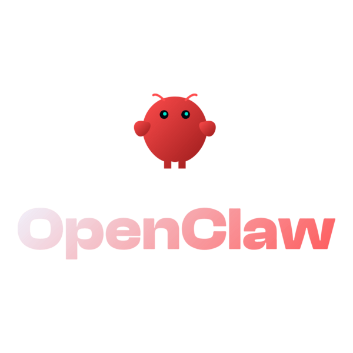
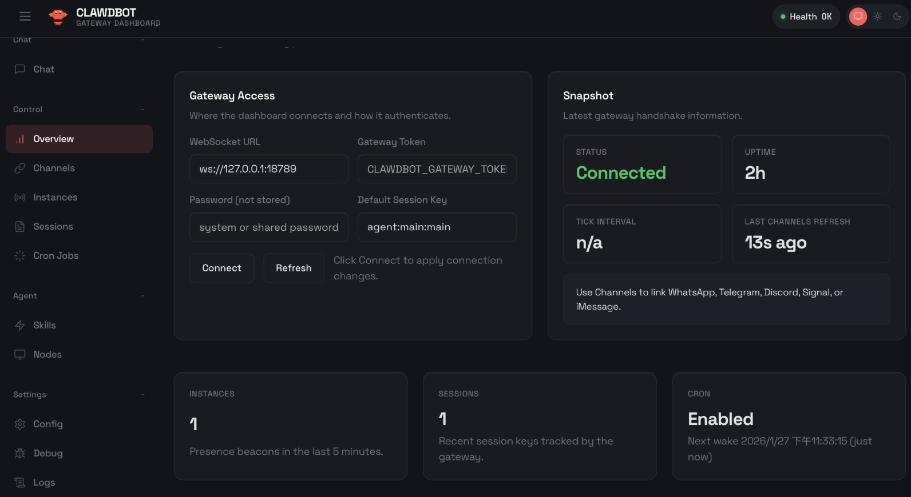

14 OpenClaw
El asistente de IA autoalojado
Resumen ejecutivo
OpenClaw es un asistente personal de IA open source y autoalojado: se instala en un computador propio y conversa contigo por los canales que ya usas —WhatsApp, Telegram, correo— de forma permanente. A diferencia de un chatbot de navegador, OpenClaw recuerda, ejecuta tareas y opera de manera continua: puede revisar información periódicamente, mantener listas y recordatorios, y automatizar flujos completos. Es de las herramientas más potentes de esta parte y también la que exige más criterio: requiere perfil técnico para instalarla y resguardos serios para operarla.

- Acceso: OpenClaw
- Open source · El software es gratuito; el modelo de IA que lo impulsa se contrata aparte (API de pago) o se ejecuta localmente.
14.1 Qué lo hace distinto
| Chatbot de navegador | OpenClaw | |
|---|---|---|
| Dónde vive | Servidor de la empresa | Tu computador/servidor |
| Memoria | Por conversación | Persistente, en archivos tuyos |
| Canales | La web del proveedor | WhatsApp, Telegram, correo y más |
| Iniciativa | Solo responde | Puede actuar de forma programada |
| Código | Cerrado | Abierto, auditable |

Un chatbot es una ventanilla de atención: respondes cuando alguien llega. OpenClaw es un funcionario de turno: tiene tareas asignadas, las ejecuta aunque nadie le esté hablando, y te avisa cuando algo requiere tu decisión. Y como todo funcionario con acceso a sistemas, necesita perfil de cargo, claves acotadas y supervisión.
14.2 Casos de uso institucionales (con perfil técnico)
- Vigilancia de información pública: “Revisa cada mañana el Diario Oficial y los portales de fondos concursables; avísame por Telegram si aparece algo sobre espacios públicos o medio ambiente.”
- Asistente interno de equipo: conectado al canal del equipo, responde sobre los documentos de la unidad, agenda hitos y prepara borradores de minutas.
- Automatización de reportes: generar el resumen semanal de reclamos georreferenciados (flujo del Módulo 1) y distribuirlo sin intervención manual.
- Memoria de gestión: registro conversacional de acuerdos y pendientes consultable en lenguaje natural.
14.3 Advertencias serias
OpenClaw ejecuta acciones reales con acceso real. Antes de usarlo institucionalmente:
- Nunca instalarlo con acceso a datos personales de vecinos ni a sistemas críticos. Empezar con tareas de solo lectura sobre información pública.
- Cuentas dedicadas: número de WhatsApp/Telegram y correo propios para el asistente, nunca los personales de un funcionario.
- El modelo que lo impulsa puede ser remoto: si usa una API en la nube, lo que el asistente lee viaja a ese proveedor. Para confidencialidad real, combinarlo con un modelo local vía Ollama / LM Studio o infraestructura institucional.
- Requiere mantención: es un proyecto open source joven y de evolución rápida; exige a alguien del equipo informático a cargo, con actualizaciones y revisión de permisos.
14.4 Cómo empezar sin riesgo
- Probar en un computador personal con tareas triviales (recordatorios, resúmenes de páginas públicas).
- Medir el costo real de API tras una semana de uso.
- Recién entonces evaluar un piloto institucional acotado, con el encargado de seguridad informática en la mesa.
14.5 Ficha rápida
| Aspecto | Detalle |
|---|---|
| Costo | Software gratuito (open source); modelo de IA aparte (API o local) |
| Instalación | Sí: requiere perfil técnico (computador o servidor propio) |
| Fortaleza | Asistente permanente, multicanal, con memoria y automatización |
| Mejor para | Vigilancia de información, reportes periódicos, asistente de equipo |
| Riesgo principal | Acceso amplio mal configurado; proyecto joven que exige mantención |
| Regla de oro | Empezar en solo lectura, con cuentas dedicadas y sin datos personales |